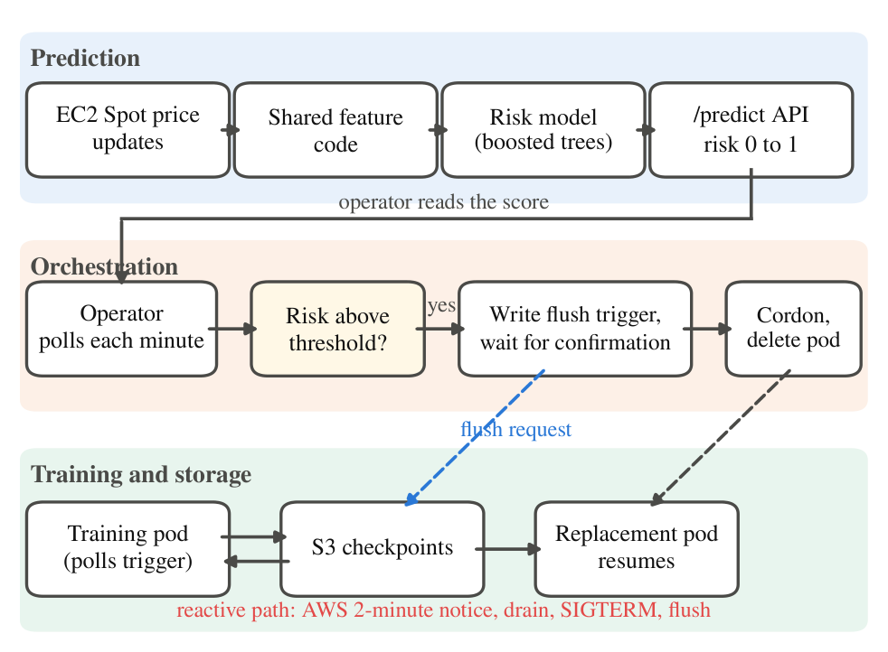
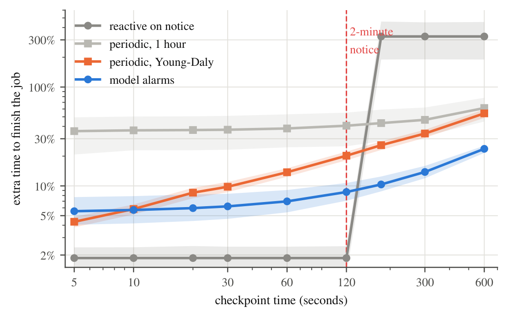
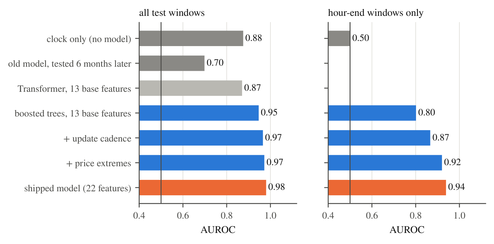
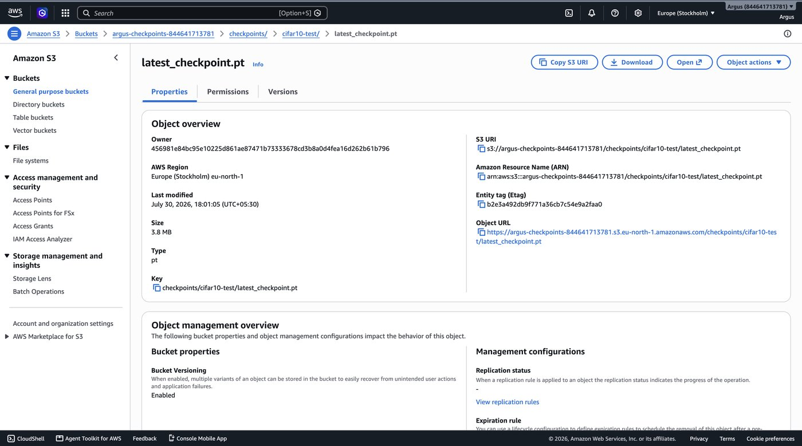
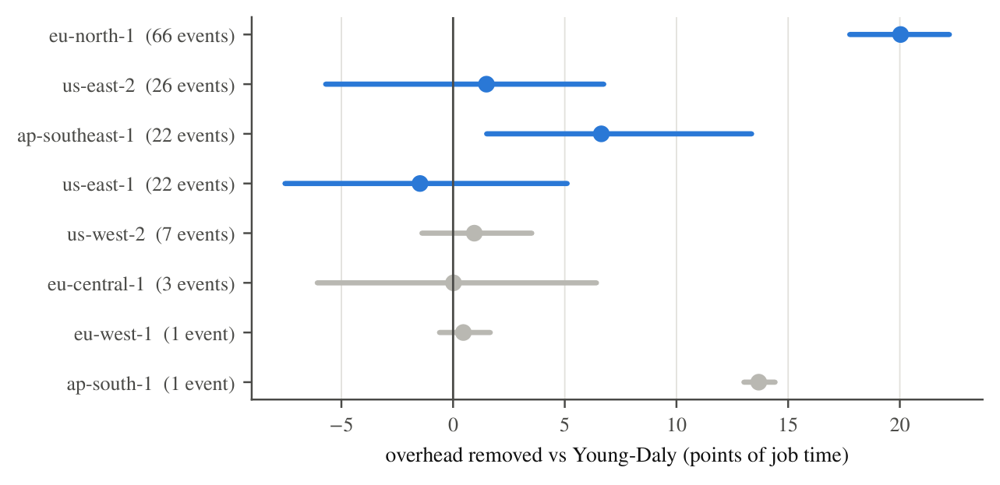
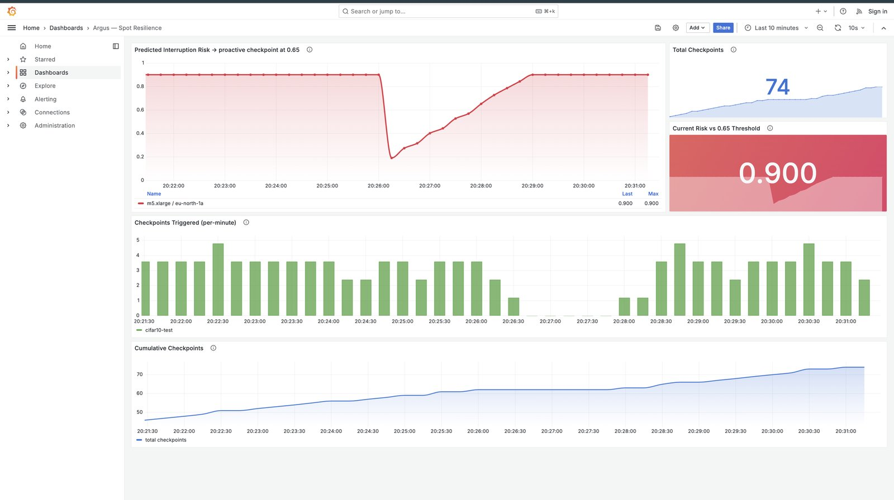

EC2 Spot capacity is cheap, but AWS can reclaim it with two minutes of notice. Argus keeps long training jobs alive anyway: it checkpoints, moves the job and resumes it without anyone stepping in. We then asked when predicting reclaims actually beats simply checkpointing.
The short answer. Reacting to AWS's two-minute notice is close to perfect while a checkpoint fits inside it. Once it does not, a good predictor beats the best periodic schedule by a wide margin. But our price-history model, excellent at predicting price spikes, has no skill on real reclaims, while AWS's own placement score does. Prediction pays when its signal is real.
Three layers talk through narrow interfaces, so the training code needs no changes beyond saving and loading checkpoints.
Spot prices are collected every 5 minutes. Gradient-boosted trees score the chance of a price spike (/predict); a second model trained on real reclaims scores reclaim risk from AWS's placement score and the node's age (/reclaim_risk).
A Kubernetes operator polls the risk each minute. Above the threshold it asks the pod to flush a checkpoint, waits for the acknowledgement, cordons the node, and recreates the pod on healthy capacity.
A PyTorch job polls for the flush request every 5 seconds, checkpoints to S3 on request or on SIGTERM, and resumes from the last saved epoch on its new node.

A checkpoint only helps if it finishes before the node disappears. We measured upload from EKS worker nodes to S3 in the same region at about 114 MB/s per node. Training state is about 12 bytes per parameter (weights plus two Adam moments), so:
| Model | Parameters | Training state | Time to S3 | Fits in 2 min? |
|---|---|---|---|---|
| CIFAR-10 CNN (our testbed) | 0.3 M | 4 MB | under 1 s | yes |
| ResNet-50 | 25.6 M | 307 MB | 3 s | yes |
| BERT-large | 340 M | 4.1 GB | 36 s | yes |
| 1.3B-parameter LLM | 1.3 B | 15.6 GB | 136 s | no |
| 7B-parameter LLM | 7.0 B | 84.0 GB | 735 s | no |
The benchmark replays the last nine days of real eu-north-1 Spot prices, and the model's own causal scores make every decision: it sees only what it could have seen at the time. The alarm threshold was chosen on a separate calibration slice. The job is synchronous on 15 nodes, so one interrupted node stops all of them. Slowdown against an ideal run (1.00 means nothing lost):
| Policy (15 nodes) | 10 s | 60 s | 300 s |
|---|---|---|---|
| No protection | 4.25 | 4.25 | 4.25 |
| Reactive on the 2-minute notice | 1.02 | 1.02 | 4.25 |
| Periodic, every hour | 1.36 | 1.38 | 1.47 |
| Periodic, Young-Daly interval | 1.06 | 1.14 | 1.34 |
| Alarms from the original model | 1.82 | 1.91 | 2.48 |
| Alarms from the retrained model | 1.06 | 1.07 | 1.14 |
| Oracle, 5 minutes of perfect warning | 1.01 | 1.01 | 1.03 |

AWS now updates Spot prices about once an hour, so every spike lands on the hour and a rule that only knows the clock already scores AUROC 0.88. We therefore also measure skill only among the hour-end windows where a spike is possible. Retrained on 100 times more data (768 price series, 8 regions), the model reaches AUROC 0.98 overall and 0.94 among hour-end windows, steady across seeds and five retraining dates. The original model, tested six months after training, had fallen to 0.70.

The benchmark treats a price spike as an interruption. To check that, we needed real reclaims, which AWS does not publish. So we ran a fleet of small Spot "sensor" instances across eight instance types and four regions, replacing each reclaimed one and capping every instance at two hours. Of 315 instances, 152 were reclaimed. How well does each signal anticipate a reclaim within 15 minutes?
| Predictor | AUROC | 95% interval |
|---|---|---|
| Price-history model (retrained) | 0.53 | 0.47 to 0.60 |
| AWS Spot placement score | 0.74 | 0.69 to 0.80 |
| Instance age, younger is riskier | 0.75 | 0.67 to 0.80 |
| Placement, age and price risk combined | 0.77 | 0.71 to 0.83 |
| Reclaim rate of the pool in other hours | 0.85 | 0.81 to 0.89 |
| Price spike in the next 15 min (not causal) | 0.50 | 0.50 to 0.51 |
Price spikes do not coincide with real reclaims, and the price model has no skill on them. A placement-score-and-age model holds up on a held-out day (0.74), on pools it never saw (0.76) and on a region it never saw (0.77). Argus now serves it at /reclaim_risk, and the operator uses it when a job sets riskSignal: capacity.
Training was at epoch 7 on a real Spot node when the interruption warning arrived.
With the retrained model served live on a three-node cluster, the operator saw the risk cross the threshold, asked the pod to flush, and got the acknowledgement after 2.1 seconds for the small model and 34.3 seconds for a 2 GB checkpoint. In both cases the replacement resumed from the full checkpoint, while a second job on another node ran undisturbed.
The cluster run also found five defects that unit tests had missed: a flush confirmation that could never succeed with our IAM permissions, endless re-migration of a pool that stayed risky, a poll interval tied to batch time, a slow and fragile "atomic" upload, and a failed download that would have silently restarted training from scratch. All five are fixed.

Repeating the replay in the seven other regions, among the four with at least 20 events the model wins in two (eu-north-1 and ap-southeast-1), ties in two (us-east-1 and us-east-2), and never loses significantly. The other regions had too few events to separate any policies.

The operator exports its risk score and checkpoint counts to Prometheus, and a Grafana dashboard shows the risk crossing the threshold and the checkpoint firing at that moment.

The local demo needs no AWS account. It starts the real prediction API, scores every instance and zone pair from a committed price snapshot, and prints the benchmark results.
git clone https://github.com/Angshuman1211/Argus-Spot_Resilient_ML_Training_Orchestrator cd Argus-Spot_Resilient_ML_Training_Orchestrator git checkout week-9-v2-fixes-and-benchmark pip install -r ml/api/requirements.txt pandas python demo/run_demo.py